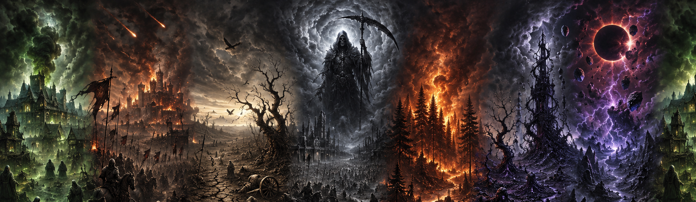

The third calamity is the Carcerian Phage. A terrifying magical curse believed to originate from the Lower Planes, spreading not through ordinary contagion but through malignant planar corruption bound to the victim’s soul. In its early stages, afflicted individuals suffer exhaustion, fever, nightmares, and growing mental instability before strange crimson runes begin manifesting around their bodies, hovering inchs from the skin like rotating chains forged from living arcane energy. These vile sigils drift endlessly around the victim in tightening patterns as the Phage consumes both body and spirit, eventually rendering the host comatose within hours or days of the visible symptoms appearing. While the afflicted remain alive, the curse is strangely dormant toward others, as though awaiting completion. Upon the victim’s death, however, the true horror reveals itself: the body violently ruptures from within as a temporary planar gate tears open through the corpse, allowing a fiend from Carceri to emerge into the mortal world. At the same moment, the rune-chains erupt outward in a blast of corruptive energy capable of infecting nearby creatures, beginning the cycle anew. Many scholars fear the Carcerian Phage is not merely a disease, but a deliberate weapon designed to seed planar incursions through mortal populations, turning death itself into a doorway for infernal invasion.
The Third Calamity, remembered as the "Carcerian Phage" spread unchecked through the crowded streets and halls of the capital, turning each death into a new infernal breach as victims erupted into fiend-spawning horrors that plunged the city into chaos, paranoia, and apocalyptic slaughter.
The Carcerian Phage decrepifies its victims through fever, exhaustion, wasting flesh, and mounting madness as crimson rune-chains drain both body and soul until the host collapses into a final coma and dies in horrific planar rupture.
Some whisper that the Carcerian Phage was forged by fiends of Carceri as a living weapon meant to turn mortal cities into gateways for infernal invasion, while others believe it emerged from something ancient disturbed beneath the earth during the First Calamity. Rumors of survival are equally desperate and uncertain, ranging from claims that holy wards or powerful planar magic can halt the corruption, to purging the city of the impure who caused the corruption and deserve it.